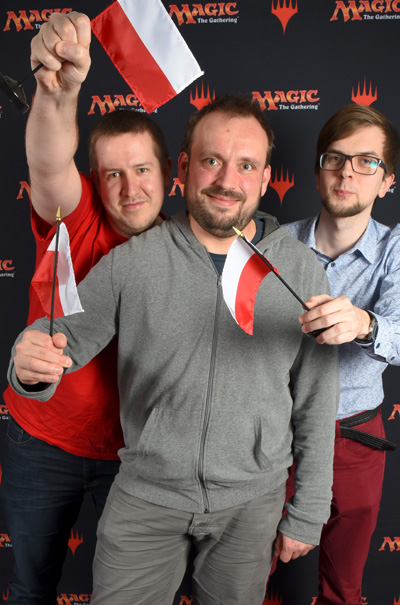

3 grudnia 2017
W trakcie właśnie kończącego się weekendu, we francuskiej Nicei odbywały się drużynowe mistrzostwa świata w Magic: the Gathering, z pulą nagród niewiele ponad 250 tys. USD. Pewnie informacja ta nie wyszłaby poza medżikowy półświatek, gdyby nie fakt, że reprezentacja naszego kraju zdobyła tytuł wicemistrza.

Panowie w składzie: Grzegorz Kowalski, Piotr Głogowski i Radek Kaczmarczyk przyczynili się do największego sukcesu drużynowego polskiej sceny M:tG, ulegając jedynie Japonii. Na scenie międzynarodowej do tej pory mieliśmy jedynie sporadyczne sukcesy indywidualnych graczy, a odkąd drużynowe mistrzostwa przybrały obecną formułę w 2012 roku, nigdy nie udało nam się awansować do czołowej ósemki.
Piętnaste miejsce po pierwszym dniu zawodów nie zapowiadało sukcesu, ale między innymi dzięki niedzielnym zwycięstwom z czołową trójką: Walią, Niemcami i Belgią udało nam się dotrzeć do wielkiego finału. Tam, niestety musieliśmy uznać wyższość zawodników z Kraju Kwitnącej Wiśni, gdzie Magic jest nieporównywalnie bardziej popularny niż w u nas a zawodnicy regularnie zwyciężają w największych turniejach na całym świecie. Polacy ulegli po zaciętej walce 1:2 i zakończyli zmagania z nagrodą w wysokości 8,5 tysięcy dolarów do podziału.
Bardziej szczegółowe informacje na oficjalnej stronie Magic: the Gathering.